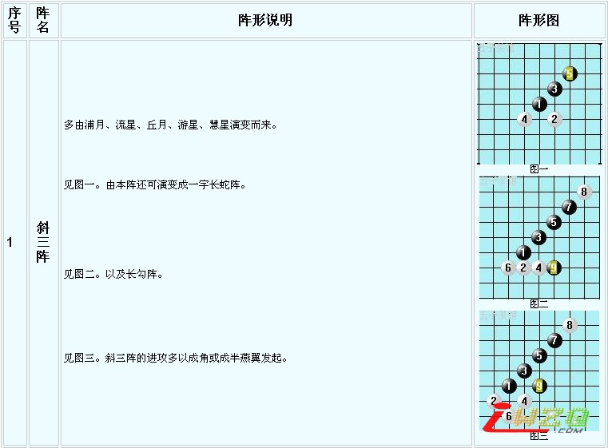
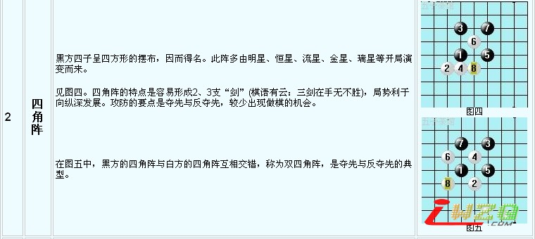
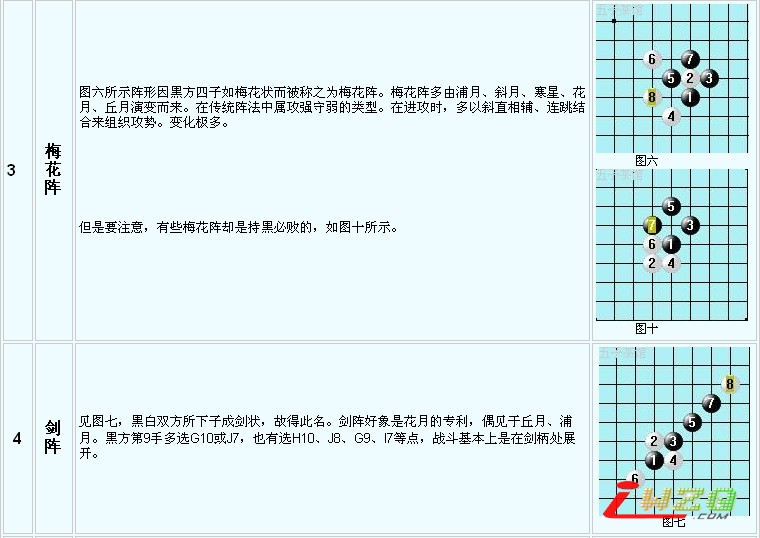
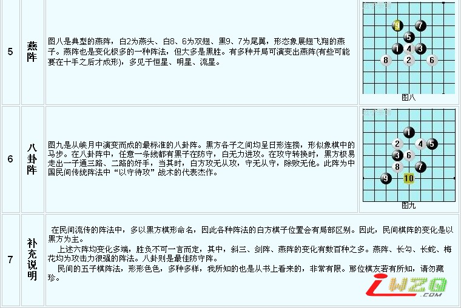

常见六种五子棋阵法
#1 常见六种五子棋阵法 作者：勇者胜 发表时间：2007-5-21 13:00:10
大家都知道五子棋发源于中国，只是在古代并没有关于五子棋的系统研究，现在许多人都在研究学习由日本人研究出来的五子定式(包括我自已在内)。但是，在中国民间流传着许多五子棋阵法，现向大家介绍六种。




［ 有志青年 于 2007-5-21 20:55:28 时奖励此帖[金币加 20 威望加1］
#2 Re:常见六种五子棋阵法 作者：我爱你遥遥 发表时间：2009-2-15 23:38:16
第一阵怎么看不到啊
#3 Re:常见六种五子棋阵法 作者：我爱你遥遥 发表时间：2009-2-15 23:38:51
不好意思 看到了
#4 Re:常见六种五子棋阵法 作者：超级玛丽 发表时间：2009-2-23 20:06:01
辛苦了，谢谢